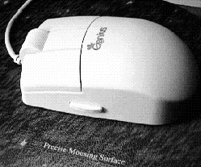

Recently, I bought the Genius EasyScroll II mouse for around ¥4,000. This mouse has four buttons, three on top and one on the left side, and a roller in front of the center button. It has a resolution of 400dpi. The enclosed software drivers are for DOS, Win3.x, and Win95, and the readme file says that the mouse will not work with WinNT. Installation for DOS and for Win95J went without problems.
Under Windows, all four buttons, as well as the roller, can be programmed, and individual programming for specific applications is possible. The scroll roller, the main special feature of this mouse, lets you scroll a window vertically not only from the scroll bar, but from any position on the window. Horizontal scrolling with the roller is possible by pressing the shift key and using the roller. Another neat feature is the so-called PowerScroll, where you start scrolling by turning the roller, and then the screen keeps scrolling with the same speed until you either move the roller in the opposite direction or the end of the screen (document) is reached.
The button on the left side can be used to switch between open applications, where it can be programmed to either go to the next application or to the previous application. The left and the right buttons function like normal mouse buttons, while the center button can be used either for PowerScroll, or for double click or many other functions.
The functions which can be programmed for the buttons are: Double click, click lock, main button, second button, middle button. enter, ESC, tab, page up/down, arrow /down/left/right, Ctrl+Z/X/C/V, Alt+Bkspc, Shift+Del/Ins, Ctrl+Ins, Y-key, N-key, F1 to F12, next/previous document, close document, line scroll up/down/left/right, page scroll up/down/left/right, undo, cut, copy, next/previous program, quit program, file new/open/save/save as/print/run, Shift+F1 help, PowerScroll, EasyScroll II Popup, and Show Task List.
Having used the mouse for about one month, I am rather content with it. Under DOS, it functions like a normal 3-button mouse, but under Win95J, it saves lots of moving around. Every once in a while, I get an error message on startup, but that may be because of my computer and setup. Running the program again gets rid of any trouble. Switching between full-screen DOS and Win95J, I have noticed that the mouse stops working, as I have not installed the DOS driver, but installing the driver before closing the DOS session so far always has brought the mouse back.
I heard somewhere that Windows is supposed to provide a mouse driver for a DOS session, but either I heard wrong or I have managed to mess up the settings, as I don't have a mouse in DOS unless I load it either in autoexec.bat or for the individual session. However, I need a mouse in DOS mostly for games, for which I unfortunately do not have as much time as I would like.
In the photo, the mouse sits on the new 3M Precise Mousing surface, bought for ¥1,280 at T-Zone. The 3M surface is a very thin mouse pad with a special surface that is supposed to keep the ball of the mouse clean while assuring excellent control. This seems to be the case, but at least to me, the surface feels somewhat funny when I touch it.
P.S. I just read that Microsoft is going to bring out a mouse with a scroll wheel.
Algorithmica Japonica
December 1996
The Newsletter of the Tokyo PC Users Group
Submissions : Editor Mike Lloret